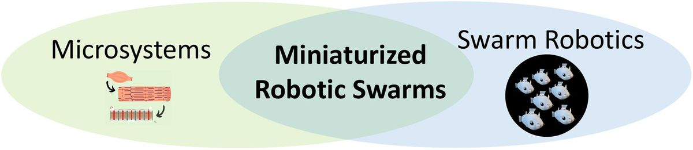
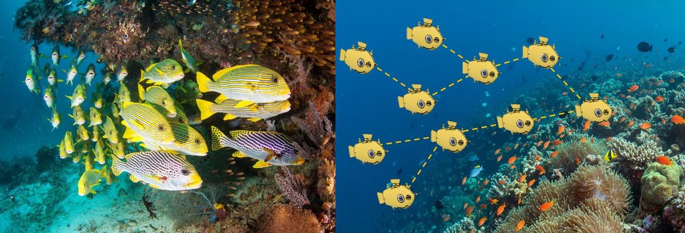
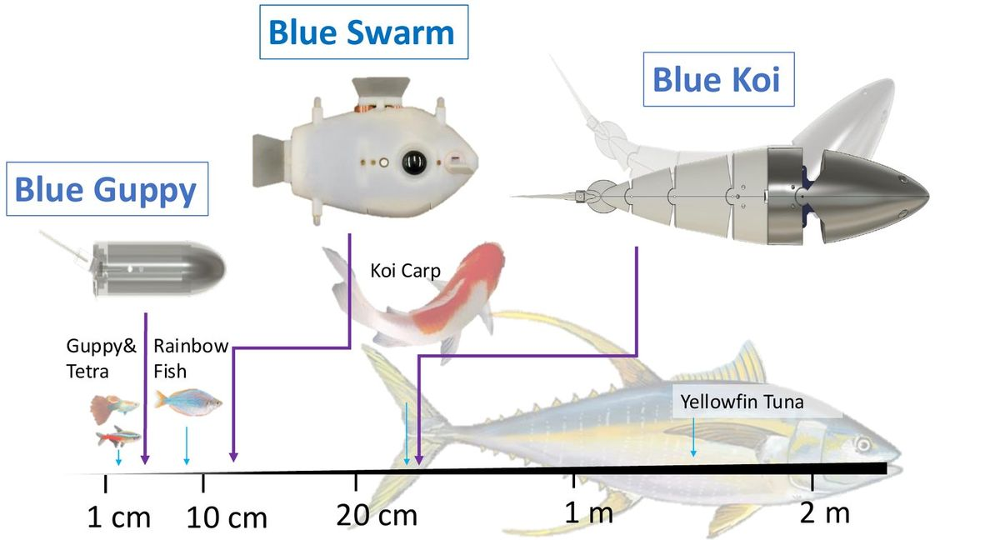
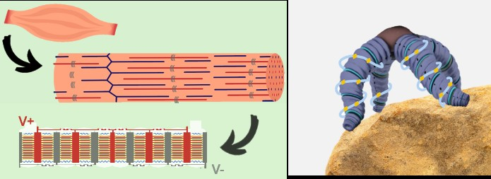

Towards small-scale artificial collectives
How can we build small robotic swarms that sense, decide, and act collectively with minimal resources?
Nature showcases organisms with remarkable individual locomotion capabilities and collective behaviors, from hummingbirds demonstrating exceptional agility and precise hovering to schools of fish traveling thousands of miles through coordinated and adaptive group motion. These collectives exhibit remarkable self-organization, where large numbers of relatively simple agents rely on local interactions to generate complex global behaviors. In this way, the collective can achieve capabilities that extend far beyond those of any individual agent.
Our group draws inspiration from these biological systems to develop artificial collectives of our own. We seek breakthroughs in hardware, algorithms, and fundamental science that enable robots with limited resources and capabilities to achieve greater autonomy, adaptability, and complexity through collective intelligence.

Using collectives as scientific instruments
Hydrodynamic interactions
BlueSwarm lets us measure individual energy costs and see how hydrodynamic interactions shape collective swimming — such as how hard each follower works its caudal fin relative to the leader, depending on where it swims in the formation.
Environmental monitoring
High-resolution exploration, fine-scale monitoring, and data collection in previously inaccessible environments — turning robot imagery into depth estimates and 3D reconstructions of habitat.
Decentralized coordination
Fish schools are one of the best-known examples of collective behavior: thousands of fish migrate together, form dynamic formations to navigate cluttered environments, and assemble into structures like bait balls to evade predators.
Using BlueSwarm, an underwater swarm of 10 Bluebots, we showed robots navigating in a variety of formations — following behind or alongside each other, moving above and below, and holding diamond-shaped configurations — all from noisy local visual interactions. It is the first experimental realization of entirely vision-based 3D formation control in miniature underwater robots.

Perception & control under constraints
Idealized models and control laws often assume robots have extensive knowledge of the environment, precise awareness of their own state, and abundant computation. Small robots have none of these: sensing is noisy, actuation is limited, and communication is constrained.
Bluebots are built around those limits — fish-inspired robots with 3D maneuverability and 3D visual perception designed for embodied intelligence and autonomous decision-making, field-tested free-swimming through seagrass and mangroves.

Actuation, sensing & power for small-scale robots
Most small-scale robots still lack the payload capacity and on-board resources for full autonomy. We build the parts that close that gap:
- PIPE actuator — a muscle-inspired electrostatic actuator whose model predicts force densities 5–10× higher than biological muscle with further miniaturization.
- Pyroelectric generator — a mm-scale lithium-niobate device producing 1–3 kV in just 0.25 cm³.
- Solar thermal harvesting — sunlight-driven power for distributed, multi-actuator systems.
